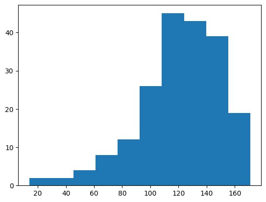
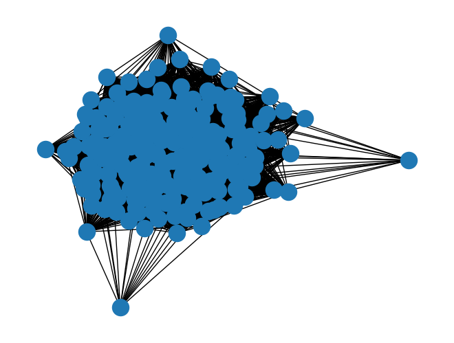
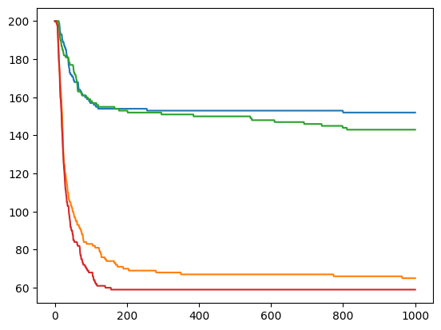
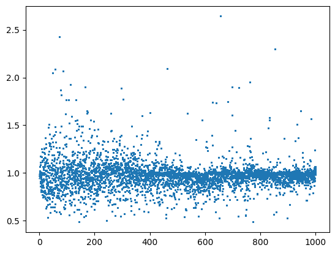
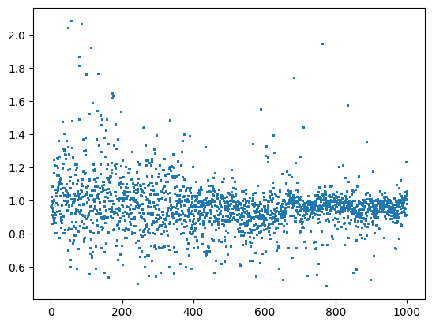

Ketika Aturan Kecil Membentuk Pola Besar
Memahami Sugarscape with Traders melalui Agent-Based Modeling dan eksperimen Batch Runner di Mesa.
Bagaimana keputusan sederhana setiap trader bisa membentuk pola pasar? Kita akan melihat cara kerja modelnya, lalu berfokus pada Session 20: bagaimana Batch Runner menguji kombinasi parameter, mengelola 442.905 baris data, dan membantu kita membaca jaringan perdagangan.
Sumber Rujukan: Santa Fe Institute Complexity Explorer (Jackie Kazil & Tom Pike, Project Mesa). Model Asli: Epstein & Axtell, Growing Artificial Societies (1996).
Mulai dari cara kerja model, lalu ikuti eksperimen dan hasilnya.
Dari model ke eksperimen
Kita mulai dari konsep yang dibutuhkan untuk memahami model, lalu menghabiskan sebagian besar waktu untuk Batch Runner, data yang dihasilkan, dan cara menafsirkan hasilnya.
Memahami ABM
Gagasan dasar ABM dan bagaimana sesi sebelumnya membangun model yang akan kita uji.
Melihat model bekerja
Environment, perilaku trader, mekanisme barter, dan hasil dari satu simulasi awal.
Session 20: Batch Runner
Menguji empat kombinasi parameter, memahami 442.905 baris hasil, lalu menyusun jaringan perdagangan dengan NetworkX.
Membaca hasil
Membandingkan empat run dan membedakan pola yang terlihat dari kesimpulan yang belum bisa dibuat.
Kesimpulan
Bagaimana Batch Runner membantu kita menguji perilaku model secara lebih sistematis.
Konsep dasar sebelum masuk ke Batch Runner
Melihat sistem dari bawah ke atas
Dalam Agent-Based Modeling (ABM), kita tidak langsung menentukan hasil akhir sebuah sistem. Kita menetapkan lingkungan, memberi setiap agent aturan perilaku, lalu mengamati pola yang muncul dari interaksi mereka. Pendekatan ini membantu kita mempelajari sistem yang tidak selalu bergerak menuju satu hasil yang sederhana.
Ada empat komponen yang perlu kita perhatikan:
- Environment: grid 50×50 tempat sumber daya tumbuh kembali.
- Autonomous agents: trader dengan atribut seperti vision, metabolisme, dan cadangan awal yang bisa berbeda.
- Behavioral rules: aturan lokal untuk bergerak, mengonsumsi sumber daya, dan melakukan barter.
- Measurement:
DataCollectordanBatch Runneruntuk merekam serta membandingkan hasil simulasi.
Bagaimana course ini sampai ke Session 20
Pilih fase untuk melihat konsep yang dibangun sebelum eksperimen batch.
Arsitektur SugarscapeG1mt
Bagaimana trader bergerak dan bertahan hidup
Tiga langkah dalam setiap step
Setiap step, scheduler mengacak urutan trader. Setiap trader mengeksekusi 3 tahap utama:
- Move (Pencarian Spasial Terbatas): Menginspeksi sel kosong dalam radius
visiondengan metrik jarak Manhattan (moore=False). Mengevaluasi sel dengan jumlah gula dan rempah tertinggi. Bila seri, pilih yang terdekat; bila tetap seri, pilih acak. - Eat (Panen & Konsumsi): Memanen seluruh gula dan rempah di sel tujuan, lalu membakar cadangan sebesar
metabolism_sugardanmetabolism_spice. - Starvation (Kematian Selektif): Melalui fungsi
maybe_die(), jikasugar ≤ 0atauspice ≤ 0, agen mati kelaparan dan dihapus permanen dari grid dan schedule.
Kapan dua trader memilih untuk bertukar?
Coba aturan transaksinya
Kalkulator ini memperlihatkan bagaimana Marginal Rate of Substitution (MRS) memengaruhi harga dan keputusan barter.
Aturan Transaksi: Trade hanya terjadi jika kesejahteraan (Cobb-Douglas welfare, W = sugar^(m_s/(m_s+m_p)) * spice^(m_p/(m_s+m_p))) kedua belah pihak meningkat, dan MRS setelah transaksi tidak saling menyilang (no crossing condition).
Apa yang direkam oleh DataCollector?
Merekam tanpa mengubah perilaku model
Mesa memisahkan dinamika model dari proses perekaman data menggunakan mesa.DataCollector:
- Model Reporters:
"Trader": Menghitung jumlah agen hidup per step (len(agents_by_type[Trader]))."Trade Volume": Total transaksi bilateral yang sukses disepakati pada step tersebut."Price": Geometric mean dari seluruh harga transaksi yang terjadi pada step tersebut.
- Agent Reporters:
"Trade Network": Memanggil fungsi helperget_trade(agent)untuk mencatat daftar ID mitra dagang tiap trader.
Catatan Kritis: Pengumpulan data di level agent inilah yang menyebabkan ukuran data membengkak drastis saat masuk ke Batch Runner di Session 20.
Satu simulasi memberi kita satu cerita
Pada run tunggal seed 42 ini, populasi menyusut dari 200 menjadi 64 trader dan stabil sejak step 312, dengan harga rata-rata 1,1068. Namun, apakah 64 penyintas ini hukum universal model, atau hanya kebetulan seed 42? Inilah alasan mengapa kita membutuhkan Batch Runner di Session 20.
Alur eksperimen Batch Runner
Di Session 20, kita beralih dari mengamati satu simulasi ke membandingkan beberapa konfigurasi. Batch Runner membantu kita melihat bagaimana hasil berubah ketika parameter model diubah.
Ruang Parameter
Menentukan variabel yang diuji: vision_min (kapasitas penglihatan) dan metabolism_max (beban konsumsi).
Desain Sweep 2×2
Memetakan kombinasi ortogonal: range(1,3) × [3,5] menghasilkan tepat 4 konfigurasi model terisolasi.
Eksekusi batch_run
Mesa mengorkestrasi 4 simulasi otonom hingga step 1000 dengan pencatatan periodik (data_collection_period=1).
Olah Dataframe
Mengelola ledakan data 442.905 baris hasil agent reporter, melakukan agregasi dan filtering per RunId.
Analisis Jaringan
Mengekstraksi relasi barter ke graf NetworkX, mengukur konektivitas, koefisien clustering, dan efisiensi global.
Menentukan parameter dan menjalankan eksperimen
Apa yang diuji dalam eksperimen ini?
Tom Pike merancang parameter sweep dengan variabel spesifik:
width: 50, height: 50— Dimensi grid ruang spasial dijaga konstan agar densitas awal tetap setara (200 trader pada 2.500 sel).vision_min: range(1, 3)— Menguji nilai 1 dan 2. Rentang vision tiap trader adalahint(uniform(vision_min, vision_max+1)), denganvision_maxtetap di default 5. Jadi kelompok pertama bervision 1–5, kelompok kedua 2–5; yang diuji adalah batas bawahnya.metabolism_max: [3, 5]— Menguji nilai batas atas pembakaran energi 3 vs 5. Menguji seberapa rentan populasi terhadap tekanan fisiologis ekstrem.
Argumen Pemanggilan batch_run:
iterations = 1: Satu kali run per kombinasi parameter (tahap eksplorasi awal).number_processes = 1: Eksekusi proses tunggal sekuensial (dapat diparalelkan pada CPU multi-core).data_collection_period = 1: Merekam data pada setiap step tanpa jeda waktu.display_progress = True: Menampilkan progres bar tqdm di Colab.
Mengapa hasilnya mencapai 442.905 baris?
Memahami ukuran data
Saat hasil results_batch diubah menjadi pandas DataFrame di Cell 26, ukurannya mencapai 442.905 baris × 12 kolom. Mengapa untuk 4 run 1.000 step bisa sebesar itu?
Jika hanya model reporters: 4 run × 1.001 step = 4.004 baris.
Namun karena ada
agent_reporters = {"Trade Network": get_trade}, batch runner mencatat 1 baris untuk setiap agen yang masih hidup pada setiap step!Rata-rata ~110 agen hidup × 1.001 step × 4 run ≈ 440.000+ baris.
Pelajaran Rekayasa Data dari Tom Pike: Di Google Colab, agent reporter ini memakan memori RAM hingga mendekati limit crash. Tom Pike menjelaskan bahwa untuk eksperimen dengan iterasi banyak (misal 30 iterasi), agent reporter harus di-comment out agar Colab tidak kehabisan RAM.
Untuk analisis level model, data disaring: results_df[results_df["metabolism_max"] == 3] menghasilkan 306.267 baris (menunjukkan populasi jauh lebih banyak bertahan pada metabolisme rendah!).
Dari catatan transaksi menjadi jaringan perdagangan
Pada Cell 31–34, catatan barter diubah menjadi graf NetworkX (G = nx.Graph()). Setiap trader menjadi simpul, dan hubungan perdagangan menjadi sisi yang menghubungkan mereka.
Melihat pola hubungan dalam jaringan

Histogram Derajat: Derajat relasi agen berkisar antara 14 hingga 171 relasi, memuncak di interval 90–120.

Visualisasi nx.draw(G): Memperlihatkan inti pasar terdesentralisasi yang sangat terhubung padat dan kohesif.
Catatan Metodologis Penting: Graf di atas dibangun dari results_df gabungan seluruh RunId tanpa memisahkan run. Karena agent_id dimulai ulang dari 0 pada setiap model, agen dari run yang berbeda bertabrakan pada ID yang sama. Artinya metrik 14 / 0,6826 / 0,8045 menggambarkan graf agregat lintas-run, bukan jaringan pasar satu run tunggal. Sebagai pembanding, graf satu run di Cell 21 menghasilkan Connectivity 0, Clustering 0,3969, dan Efficiency 0,4461 dengan keterangan "Some traders not connected".
Apa yang berubah pada empat kombinasi parameter?
Tabel ini membandingkan hasil empat konfigurasi parameter pada Session 20. Angka-angka yang ditampilkan berasal dari hasil eksperimen yang tersedia.
| RunId | vision_min | metabolism_max | Trader (Step 1000) | Survival Rate | Price Rata-rata | Total Trade Volume |
|---|---|---|---|---|---|---|
| Run 0 | 1 | 3 | 145 | 72,5% | 0,9612 | 29.589 |
| Run 1 | 1 | 5 | 64 | 32,0% | 1,1070 | 12.795 |
| Run 2 | 2 | 3 | 155 | 77,5% | 0,9762 | 26.079 |
| Run 3 | 2 | 5 | 71 | 35,5% | 1,1288 | 11.628 |

metabolism_max = 3 (bertahan ~145–155 agen), sedangkan dua garis terbawah adalah metabolism_max = 5 (hanya bertahan ~64–71 agen). Terjadi percabangan sistem yang sangat tegas.


Apa yang bisa kita simpulkan dari hasil ini?
Hasil simulasi memperlihatkan beberapa pola. Langkah berikutnya adalah menilai pola mana yang didukung data, dan mana yang masih perlu diuji.
Metabolisme berkaitan kuat dengan jumlah trader yang bertahan
Pada dua pasangan yang diuji, menaikkan metabolism_max dari 3 menjadi 5 berkaitan dengan penurunan jumlah trader akhir dari 145 menjadi 64, dan dari 155 menjadi 71. Pola ini terlihat jelas pada hasil yang tersedia, tetapi masih perlu diuji dengan lebih banyak replikasi.
Perubahan vision memberi selisih lebih kecil
Menaikkan vision_min dari 1 menjadi 2 menambah 10 trader pada kelompok metabolism_max = 3, dan 7 trader pada kelompok metabolism_max = 5. Pada eksperimen ini, selisihnya lebih kecil daripada perbedaan yang terlihat saat nilai metabolism berubah.
Lebih banyak trader, lebih banyak transaksi
Total transaksi pada metabolisme rendah mencapai 26.000–29.500 trade, sedangkan pada metabolisme tinggi hanya 11.600–12.800 trade. Ini mencerminkan bahwa pasar terdesentralisasi tetap hidup sepanjang populasi pembeli dan penjual bertahan hidup.
Harga tetap berfluktuasi
Rata-rata harga berada di sekitar 1,0, tetapi harga tetap berfluktuasi. Pada run seed 42, simpangan baku di step 801–1000 adalah 0,2209, sedikit lebih tinggi daripada 0,2060 pada step 1–100. Jadi, pada run ini variasi harga tidak mengecil di bagian akhir.
Eksperimen ini hanya menggunakan 1 iterasi per kombinasi parameter. Hasilnya berguna untuk eksplorasi awal, tetapi belum cukup untuk menyimpulkan hubungan sebab-akibat secara statistik. Untuk analisis yang lebih kuat, setiap kombinasi perlu dijalankan berulang kali dengan seed berbeda, misalnya 30–50 iterasi, agar variasi hasil dan interval kepercayaan dapat diperkirakan.
Dari aturan sederhana ke eksperimen yang terukur
Apa yang kita pelajari dari model ini?
- Pola makro muncul dari aturan lokal: populasi, harga, dan jaringan perdagangan terbentuk dari interaksi agent, bukan dari satu pengendali pusat.
- Lingkungan memengaruhi keputusan: distribusi Sugar dan Spice yang berbeda memberi trader alasan untuk bergerak dan bertukar sumber daya.
- Jaringan perlu dibaca sesuai cara pembentukannya: metrik agregat yang dilaporkan adalah connectivity 14, clustering 0,68, dan efficiency 0,80. Karena graf menggabungkan semua RunId, angka ini bukan gambaran satu pasar tunggal.
Mengapa Session 20 penting?
- Batch Runner mendukung eksperimen: beberapa konfigurasi dapat dijalankan dan dibandingkan dengan alur yang konsisten.
- Parameter memberi pola yang layak diteliti: pada empat run ini, metabolism berkaitan kuat dengan jumlah trader akhir, sementara perubahan vision menghasilkan selisih yang lebih kecil.
- Peluang Riset Lanjutan: Eksplorasi replikasi multi-seed secara paralel (
number_processes > 1), pengujian penuaan agen (aging & replacement), serta mekanisme warisan (inheritance).
Notebook Session 20 dan model lokal sugarscape_g1mt.py menjadi rujukan untuk kode dan hasil yang dibahas di sini.